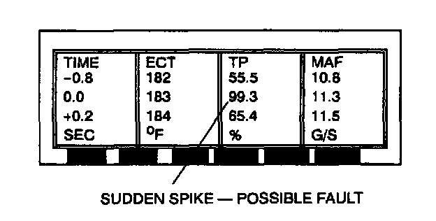
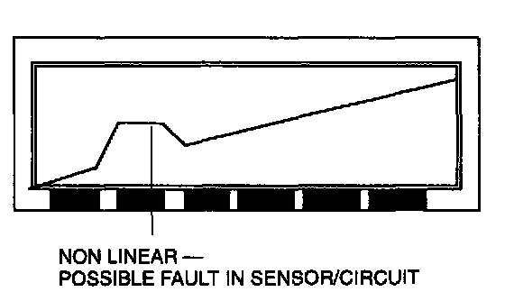

Playback of Stored PIDs Procedure
NOTE:- This is a specific function.
- Look for abnormal behavior or values that are clearly incorrect. Inspect the signals for abrupt or unexpected changes.
- Look for agreement in related signals.
- Make sure signals act in proper sequence.
1. Select VIEW RECORDER AREAS.
2. Select a view area.
3. Select up to the four PIDs to review in the table format or two PIDs to review in the graph mode.

4. Table format: Scroll through the PID data while analyzing the information. Look for sudden drops or spikes in the values.

5. Graph format: Scroll through the PID data while analyzing the information Look for sudden drops or spikes in the linear lines showing the transformation of values to the line graph.